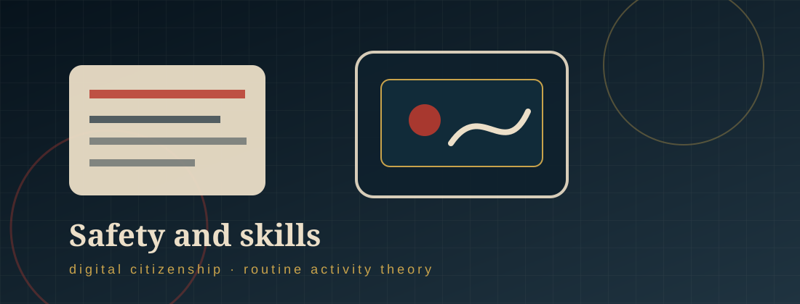

Safety, skills, and resources
Help for Victim-Survivors.
This page uses 21st-century digital skills and Routine Activity Theory to help potential targets and current victims recognize risk, reduce opportunity, and seek support.

§ 01
21st-century skills victims should develop
- Vigilance: Recognize repeated pressure, threats, controlling behavior, and requests to “prove” love or trust through intimate images.
- Responsibility: Understand that saving, forwarding, requesting, or laughing at a private image contributes to the abuse.
- Critical thinking: Question manipulative promises such as “I will never show anyone” or “If you trusted me, you would send it.”
- Decision making: Pause before sharing private content and consider screenshots, forwarding, cloud storage, and future threats.
- Problem solving: If threatened, save evidence, report content, block the offender when safe, and ask a trusted person for help.
§ 02
Routine Activity Theory safety advice
- Motivated offender: A victim cannot control whether an offender wants to harm someone, but they can recognize warning signs and stop engaging when pressure begins.
- Suitable target: Reduce risk by limiting access to private images, using privacy settings, protecting cloud storage, and avoiding pressure-based sharing.
- Capable guardianship: Increase protection by involving trusted adults, friends, counselors, school officials, platform safety teams, victim services, or police.
- Interrupt opportunity: Do not give in to escalating demands. Document threats, save URLs and usernames, report accounts, and change passwords.
§ 03
Digital safety strategies
- Protect personal information, passwords, location details, account access, and private images.
- Remember that “private” communication can become public if someone screenshots, saves, forwards, uploads, or shows the image to others.
- Use two-factor authentication, strong unique passwords, private settings, and updated devices.
- Seek help when a situation becomes dangerous or too difficult to handle alone.
- Preserve evidence before deleting messages, posts, usernames, or URLs.
§ 04
Helpful websites and reporting strategies
- Without My Consent — information on online harassment and image abuse.
- Without My Consent 50 State Project — state-by-state legal information.
- Take It Down — helps minors remove or stop online sharing of nude, partially nude, or sexually explicit images.
- StopNCII.org — helps adults prevent nonconsensual intimate images from being shared on participating platforms.
- Use platform reporting tools for nonconsensual intimate image abuse, harassment, privacy violations, or copyright removal where appropriate.
- If you believe you are a victim of nonconsensual distribution of intimate images, report it to your local police.
Disclaimer: This website was designed by V.A. as a project for my course. Thank you for visiting my site to learn about nonconsensual distribution of intimate images. The information within this site was accurate at the time of its creation in December 2025. However, please note that this site will not be monitored nor will it be updated. If you have questions about any of the material within it, please see the sites listed in “Help for Victim-Survivors,” and if you believe you are a victim of nonconsensual distribution of intimate images, please report it to your local police.
References
01 Shapiro, L. R. (2023l). Combating cyberpredators through education. In Cyberpredators and their prey (pp. 335–360). CRC Press.
02 Without My Consent. (n.d.). 50 State Project. https://withoutmyconsent.org/50state/
03 Wolak, J., & Finkelhor, D. (2016). Sextortion: Findings from a survey of 1,631 victims. Crimes against Children Research Center, University of New Hampshire.